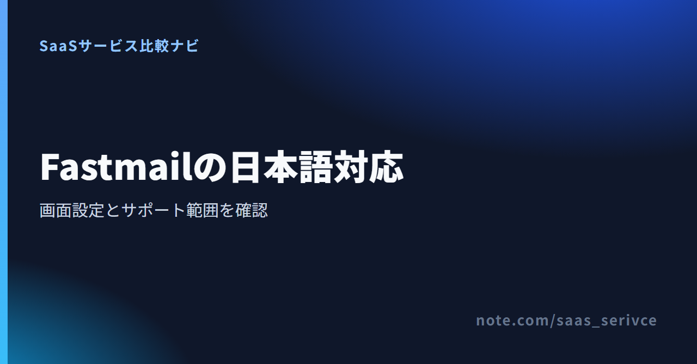
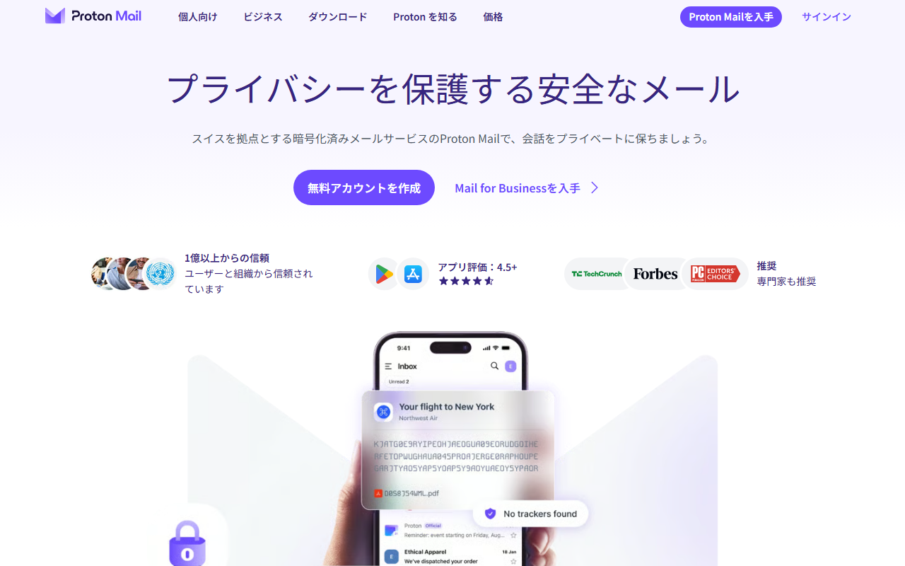

Fastmailは、メール・カレンダー・連絡先をまとめて管理できるサービスです。画面はWeb版で日本語に切り替えられますが、登録やヘルプ、個別サポートには英語が残ります。
この記事では、日本語で使える範囲と設定手順、日本から支払う際の注意点を順に説明します。
表示言語には日本語を選べます。ただし、登録から問い合わせまで完全に日本語で済むサービスではありません。
Fastmailで扱えるメール・カレンダー・連絡先の主な機能が分かります。
表示言語は、Web版のSettings → Display optionsから変更します。古い解説にはPreferences → Languageと書かれていることもありますが、現在の画面名とは異なります。
手順は次のとおりです。
切り替え後も、一部の設定画面には英語が残ります。日本語にならない項目があっても、設定ミスとは限りません。
スマホアプリは、Web版と同じ範囲が日本語になるとは限りません。App Storeの言語欄には英語と表示され、日本語レビューには細かな設定が未翻訳だという声があります。Android版も、ストアの商品説明が日本語でも、すべての画面が日本語とは断定できません。
登録後は、受信トレイだけで判断しないでください。通知、検索、カレンダー、アカウント設定まで開き、普段使う端末で英語が残る場所を見ておきましょう。
英語の設定項目が出たら、ブラウザの翻訳機能で補えます。ただし、Display optionsやBilling & Planなどの設定名は英語のまま覚えておくと、公式ヘルプの手順と照合しやすくなります。
自動翻訳で意味が曖昧になった場合は、設定を変更する前に原文へ戻してください。支払い、解約、転送ルールなど、結果に影響する項目ほど慎重に読む必要があります。
ブラウザ版へ進むと、ログイン後に表示言語の設定場所をたどれます。
日本語の件名や本文を扱うことと、Fastmailの設定画面が日本語で表示されることは別の話です。二つを分けて考えると、契約後に英語で困る場面が見えてきます。
メールを書く画面が日本語でも、日本語の入力はパソコンやスマホ側のキーボードを使います。反対に、画面の一部が英語でも、日本語入力ができなくなるわけではありません。
Fastmailはカード不要の無料トライアルを用意しています。契約前に次の操作を試せば、日常の使い方に合うかを見極められます。
文字化けの有無や日本語検索の挙動は、この記事で実測したものではありません。普段使う端末とメール相手の組み合わせで、実際に試してください。
Fastmailのメールを外部のメールソフトで読む場合、メニューや設定の言語はそのソフト側で決まります。FastmailのWeb版を日本語にしても、外部ソフトの画面までは切り替わりません。
Business向けBasic（1ユーザー課金・6GB）は、外部メールアプリで使うIMAPやSMTPに対応していません。個人向けのIndividual、Duo、Familyとは別のプランです。普段のメールソフトを継続したい人は、表示言語に加え、プランの対応範囲も選ぶ基準になります。
Fastmailは、登録、公式ヘルプ、個別サポートを英語のみで提供しています。日本語に切り替えた受信画面だけを見て申し込むと、トラブル時に戸惑うかもしれません。
アカウント作成や本人確認の案内には英語が使われます。公式ヘルプも英語なので、画面名を原文のまま検索すると、該当する説明を探しやすくなります。
ブラウザ翻訳を使う場合も、ボタン名や設定名は原文と見比べましょう。翻訳後の呼び方だけを覚えていると、ヘルプで同じ言葉が見つからないことがあります。
問い合わせ窓口は、support@fastmail.comへのメールと専用フォームです。祝日を除いて24時間体制で受け付けており、通常は24時間以内に返信すると案内されています。
電話や日本語専用の窓口はありません。返信も英語なので、ブラウザ翻訳や翻訳ツールを使って読み書きする準備が必要です。
問い合わせ前に、起きていることの詳しい説明と、対象アカウントの情報をそろえます。Fastmailが公式に案内しているのは、この2点です。
パスワードやカード番号全体は書かないでください。Fastmailは、どちらも問い合わせで求めないと明記しています。
日本向け料金ページは円・税込表示です。支払いはPaddle経由で行われ、画面の日本語化や日本語サポートとは別の仕組みです。
日本から料金ページを開くと、個人向けとビジネス向けの金額が円・税込で表示されます。たとえばIndividualは月払い930円、年払い9,300円です。
円で表示されるため、日本円の予算は立てやすくなります。ただし、日本語の請求相談窓口が用意されるわけではありません。表示通貨とサポート言語は分けて考えましょう。
2024年4月以降、Fastmailの販売者はPaddleです。対応する支払い方法は、カード、Apple Pay、Google Pay、PayPalなどです。カード明細にはPaddle.net* Fastmailと表示されます。
公式の対応カード一覧にJCBは記載されていません。現金、小切手、銀行振込、暗号資産も使えません。日本で普段使っている決済手段が対応しているか、申込画面で見ておく必要があります。
支払いが完了すると、Paddleから請求書がメールで届きます。紛失した場合はPaddleのサイトから再発行を依頼できます。
請求書を受け取れても、後払いの請求書払いとは異なります。Paddleから届く請求書の記載内容で経費処理できるかは、必要に応じて税理士へ確認してください。
日本から表示される通貨と、現在の契約画面への入口を見られます。
日本語の公式サイトとヘルプを重視するなら、Proton Mailが候補です。Fastmailは有料サービスですが、Proton Mailには無料プランがあります。

Proton Mailは日本語の公式サイトとヘルプセンターを提供しています。Web、iOS、Androidには言語変更機能があり、日本語ローカライズにも対応しています。ただし、日本語担当者が個別の問い合わせへどこまで対応するかは確認できていません。
FastmailはWeb版の一部を日本語にできますが、登録、ヘルプ、個別サポートは英語です。困ったときに日本語の手順を読めることを優先するなら、Proton Mailのほうが選びやすくなります。
Proton Mailの日本語による製品説明と、無料プランの入口を確認できます。
Proton Freeは0円で、メールアドレス1件を使えます。メールストレージは初期500MBで、開始チェックリストを18日以内に終えると1GBへ増えます。ただし、独自ドメインは使えません。
一方、Fastmailには常設の無料プランがなく、最長30日の無料トライアルだけです。独自ドメイン、必要な容量、普段使うアプリを先に決め、日本語対応だけで選ばないようにしましょう。
Fastmailに常設の無料プランはありません。カード不要の無料トライアルは最長30日なので、英語が残る範囲も含めて契約前に試せます。
登録時には、スパム対策としてSMS認証を求められる場合があります。未認証の状態では、IMAPやPOPで受信できないなどの制限がかかります。
トライアル中に作れるアドレスは5件までで、1日の送信は120通までです。転送ルール、Sieve、ファイル共有なども使えません。支払いを済ませると、その時点でトライアルが終わり、契約期間が始まります。
30日間ですべての機能を見る必要はありません。自分が使う場面を四つに絞ると判断しやすくなります。
英語が残っていても翻訳機能で対応できるのか、毎日の作業を妨げるのか。この線引きが、Fastmailを続けるかどうかの基準です。
個人向けのIndividualは月払い$6です。1ドル=157円換算（執筆時点の目安。為替で変動）では約942円ですが、日本向けページには月額930円（税込）と表示されます。
Fastmailには人数や容量が異なる個人・ビジネス向けプランがあります。この記事は日本語対応に絞っているため、各プランの違いは末尾の関連記事にまとめています。
現在の無料トライアルと登録条件を見て、そのまま申込画面へ進めます。
完全な日本語対応、スマホ表示、問い合わせ言語、fastmail.jpは、それぞれ別の疑問です。混同しやすい点だけを短く答えます。
いいえ。表示言語には日本語を選べますが、一部の画面は未翻訳です。登録、公式ヘルプ、個別サポートも英語で提供されています。
スマホアプリは、ブラウザと同じ範囲が日本語になるとは限りません。App Storeの言語欄は英語と表示されています。iPhoneとAndroidのどちらも、登録後に普段使う画面を端末ごとに確かめてください。
日本語サポートはありません。問い合わせ先はメールとフォームで、英語で状況を伝える必要があります。
はい。@fastmail.jpは、新規メールアドレス用のドメインとして全契約プランで選べます。ただし、日本語UIや日本語サポートを示すものではありません。
Fastmailでは表示言語に日本語を選べますが、未翻訳の設定画面が残ります。登録、公式ヘルプ、個別サポートも英語です。日常の受信トレイだけでなく、設定変更やトラブル時にも英語で進められるかが判断の分かれ目です。
無料トライアルへ進む前に、Fastmailが現在提供している機能を見直せます。